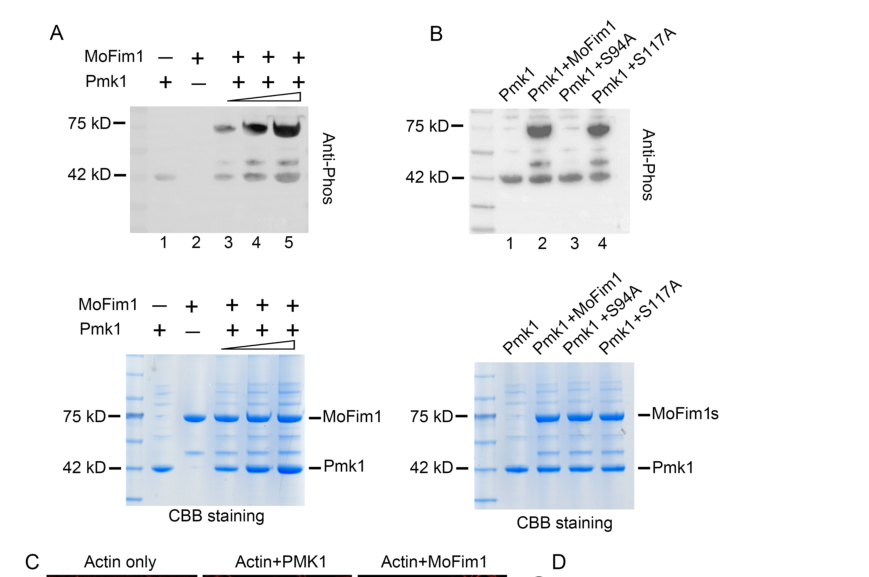

PMK1 (Pathogenicity MAP Kinase 1) encodes a Fus3/Kss1-type mitogen-activated protein kinase of the rice blast fungus Magnaporthe oryzae (Pyricularia oryzae), a CMGC-family serine/threonine kinase with a TEY activation-loop motif. It is the terminal kinase of the Mst11 (MAPKKK) - Mst7 (MAPKK) - Pmk1 cascade, which relays plant-surface cues (hydrophobicity, cutin monomers, leaf waxes) perceived through the Msb2/Sho1 sensors and the Mst50 adaptor, acting cooperatively with, and downstream of, cAMP signalling. Activated Pmk1 phosphorylates fungal substrates including the homeobox transcription factor Hox7, the Ste12-like transcription factor Mst12 and the actin-bundling protein fimbrin (MoFim1), driving a hierarchical transcriptional program for appressorium differentiation, septin-dependent cytoskeletal reorganisation, polarised exocytosis and effector gene expression. Pmk1 is essential for appressorium formation and invasive growth, and later controls the hyphal constriction that allows invasive hyphae to move from one rice cell to the next through plasmodesmata-rich pit fields. It is dispensable for vegetative growth and reproduction in culture, and it complements the mating defect of a yeast fus3 kss1 double mutant.
| GO Term | Evidence | Action | Reason |
|---|---|---|---|
|
GO:0000165
MAPK cascade
|
IDA
PMID:8946911 MAP kinase and cAMP signaling regulate infection structure f... |
ACCEPT |
Summary: Pmk1 is the terminal MAP kinase of the Mst11-Mst7-Pmk1 cascade. Xu and Hamer showed in vitro kinase activity and functional equivalence to yeast Fus3/Kss1; Zhao et al. 2005 established Mst7/Mst11 as the upstream MAPKK/MAPKKK that activate Pmk1 by TEY phosphorylation.
Reason: Pmk1 performs the final kinase step of the cascade and is the core of its biological role. Well supported by the cited paper and by the cascade reconstruction in PMID:15749760.
Supporting Evidence:
PMID:8946911
These results demonstrate that PMK1 is part of a highly conserved MAP kinase signal transduction pathway that acts cooperatively with a cAMP signaling pathway for fungal pathogenesis.
PMID:15749760
These data indicate that MST11 , MST7 , and PMK1 function as a MAP kinase cascade regulating infection-related morphogenesis in M. grisea .
|
|
GO:0000921
septin ring assembly
|
IMP
PMID:29567712 A single fungal MAP kinase controls plant cell-to-cell invas... |
KEEP AS NON CORE |
Summary: Sakulkoo et al. 2018 showed that Pmk1 controls the septin-dependent hyphal constriction of invasive hyphae crossing pit fields; Osés-Ruiz et al. 2021 placed septin-dependent cytoskeletal reorganisation downstream of Pmk1-dependent Mst12 phosphorylation.
Reason: Pmk1 is a signalling kinase upstream of septin reorganisation (via Mst12 and transcription), not a structural component that assembles septin rings; a regulatory term would be more precise. However, the curator's IMP is based on full text that is not cached (abstract only), so the annotation is retained as a non-core, downstream process rather than overruled.
Supporting Evidence:
PMID:29567712
Pmk1 controls the hyphal constriction required for fungal growth from one rice cell to the neighboring cell
PMID:34707224
Pmk1-dependent phosphorylation of Mst12 then regulates gene functions involved in septin-dependent cytoskeletal re-organization, polarized exocytosis and effector gene expression
|
|
GO:0004672
protein kinase activity
|
IEA
GO_REF:0000002 |
ACCEPT |
Summary: InterPro-based assignment of generic protein kinase activity, consistent with the experimentally demonstrated kinase activity of Pmk1.
Reason: Correct, though less specific than the MAP kinase activity (GO:0004707) also annotated; accepted as a valid general parent assignment.
Supporting Evidence:
PMID:8946911
a GST-Pmk1 fusion protein has kinase activity in vitro
|
|
GO:0004707
MAP kinase activity
|
IDA
PMID:8946911 MAP kinase and cAMP signaling regulate infection structure f... |
ACCEPT |
Summary: GST-Pmk1 has kinase activity in vitro (autophosphorylation and myelin basic protein phosphorylation per the deep research); Pmk1 is a Fus3/Kss1 homolog that rescues the yeast fus3 kss1 mating defect.
Reason: Core molecular function. Pmk1 is activated by the MAPKK Mst7 and phosphorylates native substrates (Hox7, Mst12, MoFim1).
Supporting Evidence:
PMID:8946911
The PMK1 gene of M. grisea is homologous to the Saccharomyces cerevisiae MAP kinases FUS3/KSS1, and a GST-Pmk1 fusion protein has kinase activity in vitro.
PMID:38252344
The results showed that Pmk1 could autophosphorylate (Fig. 3A, lane 1). In the presence of Pmk1, MoFim1 was phosphorylated.
|
|
GO:0004707
MAP kinase activity
|
IEA
GO_REF:0000120 |
ACCEPT |
Summary: Automated assignment (ARBA, InterPro MAP kinase signature, EC 2.7.11.24) concordant with the experimental data.
Reason: Consistent with the IDA annotation and the TEY-containing MAPK signature.
Supporting Evidence:
PMID:8946911
The PMK1 gene of M. grisea is homologous to the Saccharomyces cerevisiae MAP kinases FUS3/KSS1
|
|
GO:0005524
ATP binding
|
IEA
GO_REF:0000002 |
KEEP AS NON CORE |
Summary: InterPro-based ATP binding assignment from the protein kinase ATP-binding signature (UniProt BINDING 30..38, 53).
Reason: Correct (ATP is the phosphate donor of the kinase reaction) but uninformative beyond the kinase activity term.
Supporting Evidence:
file:PYRO7/PMK1/PMK1-deep-research-falcon.md
Its catalytic reaction is transfer of a phosphate group from ATP to a hydroxyl group on a protein serine or threonine, producing ADP and a phosphoprotein.
|
|
GO:0030448
hyphal growth
|
IMP
PMID:29567712 A single fungal MAP kinase controls plant cell-to-cell invas... |
KEEP AS NON CORE |
Summary: Pmk1 is dispensable for vegetative growth in culture, but its inhibition alters invasive hyphal morphology in planta, and Pmk1 phosphorylation of fimbrin (MoFim1 Ser94) promotes hyphal-tip actin bundling; phosphomimetic MoFim1-S94D restores hyphal growth of a pmk1 deletion mutant.
Reason: Supported, with a direct mechanism (fimbrin phosphorylation), but the effect on hyphal growth is modest compared to the essential roles in appressorium formation and invasive cell-to-cell growth; non-core.
Supporting Evidence:
PMID:38252344
S94D expression could restore the hyphal growth of Δpmk1
PMID:8946911
PMK1 is nonessential for vegetative growth and sexual and asexual reproduction in culture.
|
|
GO:0075018
positive regulation of appressorium formation
|
IDA
PMID:29567712 A single fungal MAP kinase controls plant cell-to-cell invas... |
ACCEPT |
Summary: Pmk1 is the central regulator of appressorium development; this row derives from the 2018 chemical-genetic study (analog-sensitive Pmk1 inhibition).
Reason: Core process: Pmk1 performs the signalling step (phosphorylation of Hox7 and Mst12) that drives appressorium differentiation. Full text not cached, but the function is well established and consistent with the IMP from PMID:8946911.
Supporting Evidence:
PMID:34707224
this tiered regulatory mechanism involves Pmk1-dependent phosphorylation of the Hox7 homeobox transcription factor, which regulates genes associated with induction of major physiological changes required for appressorium development
|
|
GO:0075018
positive regulation of appressorium formation
|
IEA
GO_REF:0000117 |
ACCEPT |
Summary: ARBA-based assignment concordant with the experimental evidence.
Reason: Consistent with experimental IMP/IDA annotations for this gene.
Supporting Evidence:
PMID:8946911
pmk1 mutants of M. grisea fail to form appressoria and fail to grow invasively in rice plants.
|
|
GO:0075018
positive regulation of appressorium formation
|
IMP
PMID:8946911 MAP kinase and cAMP signaling regulate infection structure f... |
ACCEPT |
Summary: pmk1 deletion mutants fail to form appressoria; they still respond to cAMP for early stages, placing Pmk1 downstream of cAMP signalling.
Reason: Founding experimental evidence for the core process; Pmk1 performs the signalling step rather than merely being required.
Supporting Evidence:
PMID:8946911
pmk1 mutants of M. grisea fail to form appressoria and fail to grow invasively in rice plants.
PMID:8946911
suggests Pmk1 acts downstream of a cAMP signal for infection structure formation
|
|
GO:0106310
protein serine kinase activity
|
EXP
PMID:8946911 MAP kinase and cAMP signaling regulate infection structure f... |
ACCEPT |
Summary: In vitro kinase activity of GST-Pmk1 (UniProt catalytic activity, RHEA:17989, evidence PMID:8946911); native serine substrates later identified (MoFim1 Ser94, Hox7 Ser158, Mst12 Ser133).
Reason: Correct and experimentally supported; MAP kinase activity is the more informative term but this serine-specific term is accurate.
Supporting Evidence:
PMID:8946911
a GST-Pmk1 fusion protein has kinase activity in vitro
PMID:38252344
S94A but not S117A lost phosphorylation
|
|
GO:0106310
protein serine kinase activity
|
IEA
GO_REF:0000120 |
ACCEPT |
Summary: Automated assignment (ARBA, RHEA:17989) concordant with experimental data.
Reason: Consistent with the EXP annotation and identified serine phosphosites.
Supporting Evidence:
PMID:38252344
These results indicated that Pmk1 could regulate the phosphorylation of MoFim1 at serine 94.
|
|
GO:0140649
symbiont-mediated cell-to-cell migration by invasive hypha
|
IMP
PMID:29567712 A single fungal MAP kinase controls plant cell-to-cell invas... |
ACCEPT |
Summary: Chemical-genetic inhibition of an analog-sensitive Pmk1 after host entry traps the fungus in the first invaded rice cell; Pmk1 controls the hyphal constriction at pit fields and the expression of effectors needed to move into adjacent cells.
Reason: Although a host-interaction term, this is not a loss-of-virulence inference: the inhibition was applied after penetration, separating this step from the appressorium defect, and the process is a fungal morphogenetic one (invasive hyphal constriction) controlled by Pmk1 signalling. Effector-mediated suppression of host immunity is a further downstream output and is correctly not annotated to Pmk1.
Supporting Evidence:
PMID:29567712
chemical genetic inhibition of a single fungal mitogen-activated protein (MAP) kinase, Pmk1, prevents M. oryzae from infecting adjacent plant cells, leaving the fungus trapped within a single plant cell.
PMID:29567712
Pmk1 controls the hyphal constriction required for fungal growth from one rice cell to the neighboring cell, enabling host tissue colonization and blast disease.
|
Q: Should the septin ring assembly (GO:0000921) IMP be recast as a regulatory term, given that Pmk1 acts upstream of septin reorganisation through Mst12-dependent transcription rather than assembling septins itself?
Q: Where does Pmk1 act in the cell (nucleus in appressoria versus hyphal tip with MoFim1), and should cellular component annotations be added from GFP-Pmk1 localisation data?
Experiment: Phosphoproteomics with analog-sensitive Pmk1 during invasive growth (rather than appressorium development) to identify the substrates that mediate hyphal constriction at pit fields.
The research report should be a detailed narrative explaining the function, biological processes, and localization of the gene product. Citations should be given for all claims.
You should prioritize authoritative reviews and primary scientific literature when conducting research. You can supplement
this with annotations you find in gene/protein databases, but these can be outdated or inaccurate.
We are specifically interested in the primary function of the gene - for enzymes, what reaction is catalyzed, and what is the substrate specificity? For transporters, what is the substrate? For structural proteins or adapters, what is the broader structural role? For signaling molecules, what is the role in the pathway.
We are interested in where in or outside the cell the gene product carries out its function.
We are also interested in the signaling or biochemical pathways in which the gene functions. We are less interested in broad pleiotropic effects, except where these elucidate the precise role.
Include evidence where possible. We are interested in both experimental evidence as well as inference from structure, evolution, or bioinformatic analysis. Precise studies should be prioritized over high-throughput, where available.
PMK1 (UniProt G4N0Z0; ORF MGG_09565) is identified in the supplied accession information as a mitogen-activated protein kinase (MAPK) of Pyricularia oryzae strain 70-15, the rice-blast fungus also called Magnaporthe oryzae. The original rice-blast PMK1 study used the historical name M. grisea: it described a 356-amino-acid, Fus3/Kss1-related kinase with conserved kinase subdomains and a TEY activation motif at residues 174–176. This experimentally characterized protein and subsequent M. oryzae Pmk1 studies match the supplied MAPK/CMGC kinase-domain annotation. The retrieved papers do not independently cross-reference G4N0Z0 to MGG_09565 or sequence-confirm the 70-15 allele; that exact accession-to-ORF assignment rests on the UniProt information supplied in the question. Findings about PMK1 homologues in other fungi are not used as evidence for this protein. (xu1996mapkinaseand pages 1-2, li2024fimbrinassociatedwith pages 2-4)
Pmk1 is an intracellular protein serine/threonine kinase and the terminal MAPK of an infection-related signaling cascade. Its catalytic reaction is transfer of a phosphate group from ATP to a hydroxyl group on a protein serine or threonine, producing ADP and a phosphoprotein. Recombinant GST–Pmk1 both autophosphorylated and phosphorylated myelin basic protein in vitro, establishing kinase activity; myelin basic protein is an experimental substrate, not an identified fungal physiological target. The TEY motif and Fus3/Kss1 relationship support MAPK classification, while native-substrate experiments specify what the enzyme does in this fungus. (xu1996mapkinaseand pages 1-2, xu1996mapkinaseand pages 8-9, li2024fimbrinassociatedwith pages 4-7)
The following substrates have substantially stronger biochemical support than pathway membership alone. (li2024fimbrinassociatedwith pages 4-7, osesruiz2021appressoriummediatedplantinfection pages 9-10, osesruiz2021appressoriummediatedplantinfection pages 7-8)
| Pmk1 substrate | Type | Site | Direct evidence | Functional interpretation |
|---|---|---|---|---|
| Hox7 | Native transcription factor | Ser158 | Activated purified GST–Pmk1 phosphorylated recombinant Hox7; phosphoproteomics and targeted PRM confirmed Pmk1-dependent S158 phosphorylation during early appressorium development (osesruiz2021appressoriummediatedplantinfection pages 10-11, osesruiz2021appressoriummediatedplantinfection pages 9-10) | Controls early appressorium differentiation, autophagy/cell-cycle programs, and downstream transcription. Functional rescue involved a triple phosphomimetic Hox7 S126D/S158D/S254D allele, not an isolated S158D test (osesruiz2021appressoriummediatedplantinfection pages 9-10) |
| Mst12 | Native transcription factor | Ser133 | Activated Pmk1 directly phosphorylated recombinant Mst12 in vitro (osesruiz2021appressoriummediatedplantinfection pages 10-11) | Supports the later appressorium-maturation program, including septin/F-actin remodeling, repolarization, exocytosis, penetration, and effector-gene expression |
| MoFim1 | Native actin-bundling protein | Ser94 | Recombinant Pmk1 phosphorylated MoFim1 in vitro in a dose-dependent manner; S94A abolished this phosphorylation whereas S117A did not (li2024fimbrinassociatedwith pages 4-7) | S94 phosphorylation promotes actin bundling and hyphal-tip organization. MoFim1-S94D restored Δpmk1 actin organization and hyphal growth and yielded appressorium-like structures in about 15% of germ tubes, but did not restore plant penetration (li2024fimbrinassociatedwith pages 7-11) |
| Myelin basic protein | Artificial assay substrate | Not determined | Recombinant GST–Pmk1 autophosphorylated and phosphorylated myelin basic protein in vitro (xu1996mapkinaseand pages 1-2) | Establishes intrinsic Ser/Thr-protein-kinase activity but does not identify a physiological fungal substrate or native substrate specificity |
Table: Experimentally tested substrates of rice-blast-fungus Pmk1, distinguishing native targets from the artificial kinase-assay substrate. The table summarizes phosphosites, biochemical evidence, and functional consequences.
In particular, the 2024 MoFim1 study combined physical-interaction assays, purified-protein kinase reactions, phosphosite substitutions and genetic rescue. Recombinant Pmk1 phosphorylated MoFim1; the S94A, but not S117A, substitution removed phosphorylation in that assay. Phosphorylation enhanced MoFim1-dependent actin bundling, connecting Pmk1 catalysis to a defined cytoskeletal output. The published Figure 3 kinase-assay panels provide visual evidence for this site assignment. (li2024fimbrinassociatedwith pages 4-7, li2024fimbrinassociatedwith media 56a3c3da, li2024fimbrinassociatedwith pages 2-4)
For nuclear signaling, activated Pmk1 phosphorylated the homeobox transcription factor Hox7 at S158 in a purified-protein assay; developmental phosphoproteomics and targeted measurements also support Pmk1-dependent S158 phosphorylation in cells. Mst12 S133 was likewise identified as a direct Pmk1 phosphorylation site. These findings establish demonstrated protein substrates rather than merely changes in their downstream gene expression. The precise full set of physiological substrates and a comprehensive sequence-based specificity rule have not been established by these experiments. (osesruiz2021appressoriummediatedplantinfection pages 10-11, osesruiz2021appressoriummediatedplantinfection pages 9-10, osesruiz2021appressoriummediatedplantinfection pages 7-8)
Host-surface cues—including hydrophobicity and cutin-derived signals—feed into an infection-related MAPK pathway. Genetic and phosphorylation experiments implicate the surface-associated proteins MoMsb2 and MoSho1, upstream Ras2, the Mst11 MAPKKK, Mst7 MAPKK, and the adaptor Mst50, culminating in Pmk1 activation. Mst50 associates with upstream kinase components, and Mst7 docks with Pmk1 during appressorium formation. This is a signaling relay, not evidence that Pmk1 directly binds cutin or acts as a cell-surface receptor. cAMP–PKA signaling cooperates with this pathway, but the relationship should not be reduced to an invariant, single linear cAMP→Pmk1 reaction. (zhao2007mitogenactivatedproteinkinase pages 3-4, wang2024keytranscriptionfactors pages 9-12, zhang2021regulationofbiotic pages 2-4)
Pmk1 acts during appressorium differentiation and maturation, when a germ tube stops polarized growth and builds the specialized cell that penetrates the rice surface. PMK1 deletion prevents normal appressorium formation and abolishes pathogenic growth in the founding study, despite relatively preserved growth and reproduction in culture. Downstream, Pmk1 phosphorylation of Hox7 helps switch on the early developmental transcriptional program; a distinct Mst12-associated program contributes to later cytoskeletal organization, penetration and invasive development. A 2021 time-resolved analysis identified 6,333 genes whose expression depended on Pmk1 under its experimental conditions; this transcriptomic association is not a claim that Pmk1 directly phosphorylates or directly regulates every gene product. (xu1996mapkinaseand pages 1-2, xu1996mapkinaseand pages 6-7, osesruiz2021appressoriummediatedplantinfection pages 10-11, osesruiz2021appressoriummediatedplantinfection pages 1-2)
The location most firmly supported for Pmk1’s function is inside fungal cells, rather than in the plant cell or extracellular space. GFP-tagged Pmk1 was observed in fungal hyphae and germ tubes, with stronger signal in developing conidia and appressoria; nuclear enrichment was reported in appressoria and developing conidia. A 2024 interaction assay additionally detected a Pmk1–MoFim1 association around the fungal hyphal tip, consistent with a local cytoskeletal role. Nuclear Hox7/Mst12 signaling and hyphal-tip MoFim1 phosphorylation therefore represent distinct, experimentally supported intracellular outputs; a tagged-protein interaction at a tip does not establish that all Pmk1 is restricted to that location. (li2024fimbrinassociatedwith pages 2-4, zhao2007mitogenactivatedproteinkinase pages 3-4)
2023 — pathway organization. Deleting the scaffold-associated protein MoScd2 lowered measured Pmk1 phosphorylation. MoScd2 interacted with Mst50 in yeast two-hybrid and pull-down experiments, supporting its role in organizing or promoting pathway activation. These results do not show that MoScd2 itself phosphorylates Pmk1. (sun2023moscd2isinvolved pages 5-7)
2024 — cytoskeletal substrate. The direct Pmk1→MoFim1-S94 mechanism links signaling to fungal actin-bundle organization and hyphal-tip growth. Expressing phosphomimetic MoFim1-S94D in a pmk1 deletion background improved actin organization and growth, and approximately 15% of germ tubes formed appressorium-like structures. Crucially, this did not restore penetration of rice sheath cells: MoFim1 is one important output, not a complete substitute for Pmk1 signaling. (li2024fimbrinassociatedwith pages 7-11, li2024fimbrinassociatedwith pages 4-7)
2024 — activation mechanism. PARP1-mediated poly(ADP-ribosyl)ation of the fungal 14-3-3 protein GRF1 was found to support its association with Mst7 and Pmk1. PARylation-defective GRF1 weakened those interactions and reduced appressorial Pmk1 activation; loss of GRF1 also weakened the Mst7–Pmk1 association. This identifies a regulated scaffolding step that helps assemble the kinase pathway, rather than assigning kinase catalytic activity to GRF1. (gao2024parylationof1433 pages 11-12, gao2024parylationof1433 pages 8-9)
2024 — relevance of allelic variation. In an avirulent M. oryzae isolate designated AM16, expressing a Pmk1 allele from virulent strain Guy11 improved functional appressorium formation and restored some pathogenicity, but not to the Guy11 level. The study also identified a defect in the cAMP-associated gene MAC1, so the phenotype cannot be assigned solely to PMK1. These are observations in AM16/Guy11 and must not be silently treated as measurements of the specified 70-15 allele. (deng2024molecularbasisfor pages 1-2, deng2024molecularbasisfor pages 7-10)
The most defensible primary annotation is infection-development MAP kinase that phosphorylates fungal transcriptional and cytoskeletal proteins to convert surface-sensing signals into appressorium formation and invasive growth. Its nuclear and hyphal-tip outputs explain why loss of one substrate modification only partially compensates for loss of Pmk1. Pmk1 is consequently a biologically important pathway node for understanding rice blast and exploring disease-control strategies; the cited experiments establish mechanistic and genetic importance, not a validated PMK1-directed field treatment. Finally, phospho-MAPK immunoblots indicate changes in pathway activation, whereas the purified-kinase experiments on Hox7, Mst12 and MoFim1 provide the narrower evidence for direct substrate phosphorylation. (xu1996mapkinaseand pages 1-2, li2024fimbrinassociatedwith pages 7-11, osesruiz2021appressoriummediatedplantinfection pages 9-10, gao2024parylationof1433 pages 11-12, zhao2007mitogenactivatedproteinkinase pages 3-4)
References
(xu1996mapkinaseand pages 1-2): Jin-Rong Xu and J. Hamer. Map kinase and camp signaling regulate infection structure formation and pathogenic growth in the rice blast fungus magnaporthe grisea. Genes & development, 10 21:2696-706, Nov 1996. URL: https://doi.org/10.1101/gad.10.21.2696, doi:10.1101/gad.10.21.2696. This article has 970 citations and is from a highest quality peer-reviewed journal.
(li2024fimbrinassociatedwith pages 2-4): Yuan-Bao Li, Ningning Shen, Xianya Deng, Zixuan Liu, Shuai Zhu, Chengyu Liu, Dingzhong Tang, and Li-Bo Han. Fimbrin associated with pmk1 to regulate the actin assembly during magnaporthe oryzae hyphal growth and infection. Stress Biology, Jan 2024. URL: https://doi.org/10.1007/s44154-023-00147-5, doi:10.1007/s44154-023-00147-5. This article has 6 citations.
(xu1996mapkinaseand pages 8-9): Jin-Rong Xu and J. Hamer. Map kinase and camp signaling regulate infection structure formation and pathogenic growth in the rice blast fungus magnaporthe grisea. Genes & development, 10 21:2696-706, Nov 1996. URL: https://doi.org/10.1101/gad.10.21.2696, doi:10.1101/gad.10.21.2696. This article has 970 citations and is from a highest quality peer-reviewed journal.
(li2024fimbrinassociatedwith pages 4-7): Yuan-Bao Li, Ningning Shen, Xianya Deng, Zixuan Liu, Shuai Zhu, Chengyu Liu, Dingzhong Tang, and Li-Bo Han. Fimbrin associated with pmk1 to regulate the actin assembly during magnaporthe oryzae hyphal growth and infection. Stress Biology, Jan 2024. URL: https://doi.org/10.1007/s44154-023-00147-5, doi:10.1007/s44154-023-00147-5. This article has 6 citations.
(osesruiz2021appressoriummediatedplantinfection pages 9-10): Míriam Osés-Ruiz, Neftaly Cruz-Mireles, Magdalena Martin-Urdiroz, Darren M. Soanes, Alice Bisola Eseola, Bozeng Tang, Paul Derbyshire, Mathias Nielsen, Jitender Cheema, Vincent Were, Iris Eisermann, Michael J. Kershaw, Xia Yan, Guadalupe Valdovinos-Ponce, Camilla Molinari, George R. Littlejohn, Barbara Valent, Frank L. H. Menke, and Nicholas J. Talbot. Appressorium-mediated plant infection by magnaporthe oryzae is regulated by a pmk1-dependent hierarchical transcriptional network. Nature Microbiology, 6:1383-1397, Oct 2021. URL: https://doi.org/10.1038/s41564-021-00978-w, doi:10.1038/s41564-021-00978-w. This article has 111 citations and is from a highest quality peer-reviewed journal.
(osesruiz2021appressoriummediatedplantinfection pages 7-8): Míriam Osés-Ruiz, Neftaly Cruz-Mireles, Magdalena Martin-Urdiroz, Darren M. Soanes, Alice Bisola Eseola, Bozeng Tang, Paul Derbyshire, Mathias Nielsen, Jitender Cheema, Vincent Were, Iris Eisermann, Michael J. Kershaw, Xia Yan, Guadalupe Valdovinos-Ponce, Camilla Molinari, George R. Littlejohn, Barbara Valent, Frank L. H. Menke, and Nicholas J. Talbot. Appressorium-mediated plant infection by magnaporthe oryzae is regulated by a pmk1-dependent hierarchical transcriptional network. Nature Microbiology, 6:1383-1397, Oct 2021. URL: https://doi.org/10.1038/s41564-021-00978-w, doi:10.1038/s41564-021-00978-w. This article has 111 citations and is from a highest quality peer-reviewed journal.
(osesruiz2021appressoriummediatedplantinfection pages 10-11): Míriam Osés-Ruiz, Neftaly Cruz-Mireles, Magdalena Martin-Urdiroz, Darren M. Soanes, Alice Bisola Eseola, Bozeng Tang, Paul Derbyshire, Mathias Nielsen, Jitender Cheema, Vincent Were, Iris Eisermann, Michael J. Kershaw, Xia Yan, Guadalupe Valdovinos-Ponce, Camilla Molinari, George R. Littlejohn, Barbara Valent, Frank L. H. Menke, and Nicholas J. Talbot. Appressorium-mediated plant infection by magnaporthe oryzae is regulated by a pmk1-dependent hierarchical transcriptional network. Nature Microbiology, 6:1383-1397, Oct 2021. URL: https://doi.org/10.1038/s41564-021-00978-w, doi:10.1038/s41564-021-00978-w. This article has 111 citations and is from a highest quality peer-reviewed journal.
(li2024fimbrinassociatedwith pages 7-11): Yuan-Bao Li, Ningning Shen, Xianya Deng, Zixuan Liu, Shuai Zhu, Chengyu Liu, Dingzhong Tang, and Li-Bo Han. Fimbrin associated with pmk1 to regulate the actin assembly during magnaporthe oryzae hyphal growth and infection. Stress Biology, Jan 2024. URL: https://doi.org/10.1007/s44154-023-00147-5, doi:10.1007/s44154-023-00147-5. This article has 6 citations.
(li2024fimbrinassociatedwith media 56a3c3da): Yuan-Bao Li, Ningning Shen, Xianya Deng, Zixuan Liu, Shuai Zhu, Chengyu Liu, Dingzhong Tang, and Li-Bo Han. Fimbrin associated with pmk1 to regulate the actin assembly during magnaporthe oryzae hyphal growth and infection. Stress Biology, Jan 2024. URL: https://doi.org/10.1007/s44154-023-00147-5, doi:10.1007/s44154-023-00147-5. This article has 6 citations.
(zhao2007mitogenactivatedproteinkinase pages 3-4): Xinhua Zhao, Rahim Mehrabi, and Jin-Rong Xu. Mitogen-activated protein kinase pathways and fungal pathogenesis. Oct 2007. URL: https://doi.org/10.1128/ec.00216-07, doi:10.1128/ec.00216-07. This article has 460 citations and is from a peer-reviewed journal.
(wang2024keytranscriptionfactors pages 9-12): Qing Wang, Zhicheng Huang, Irshad Ali Khan, Yan Li, Jing Wang, Jiaoyu Wang, Xiao-Hong Liu, Fucheng Lin, and Jianping Lu. Key transcription factors required for outburst of rice blast disease in magnaporthe oryzae. Phytopathology Research, Feb 2024. URL: https://doi.org/10.1186/s42483-024-00225-0, doi:10.1186/s42483-024-00225-0. This article has 27 citations and is from a peer-reviewed journal.
(zhang2021regulationofbiotic pages 2-4): Xue Zhang, Zeyi Wang, Cong Jiang, and Jin-Rong Xu. Regulation of biotic interactions and responses to abiotic stresses by map kinase pathways in plant pathogenic fungi. Stress Biology, Aug 2021. URL: https://doi.org/10.1007/s44154-021-00004-3, doi:10.1007/s44154-021-00004-3. This article has 101 citations.
(xu1996mapkinaseand pages 6-7): Jin-Rong Xu and J. Hamer. Map kinase and camp signaling regulate infection structure formation and pathogenic growth in the rice blast fungus magnaporthe grisea. Genes & development, 10 21:2696-706, Nov 1996. URL: https://doi.org/10.1101/gad.10.21.2696, doi:10.1101/gad.10.21.2696. This article has 970 citations and is from a highest quality peer-reviewed journal.
(osesruiz2021appressoriummediatedplantinfection pages 1-2): Míriam Osés-Ruiz, Neftaly Cruz-Mireles, Magdalena Martin-Urdiroz, Darren M. Soanes, Alice Bisola Eseola, Bozeng Tang, Paul Derbyshire, Mathias Nielsen, Jitender Cheema, Vincent Were, Iris Eisermann, Michael J. Kershaw, Xia Yan, Guadalupe Valdovinos-Ponce, Camilla Molinari, George R. Littlejohn, Barbara Valent, Frank L. H. Menke, and Nicholas J. Talbot. Appressorium-mediated plant infection by magnaporthe oryzae is regulated by a pmk1-dependent hierarchical transcriptional network. Nature Microbiology, 6:1383-1397, Oct 2021. URL: https://doi.org/10.1038/s41564-021-00978-w, doi:10.1038/s41564-021-00978-w. This article has 111 citations and is from a highest quality peer-reviewed journal.
(sun2023moscd2isinvolved pages 5-7): Li-Xiao Sun, Hui Qian, Ming-Hua Wu, Fu-Cheng Lin, and Xiao-Hong Liu. Moscd2 is involved in appressorium formation and pathogenicity via the pmk1 mapk pathway in magnaporthe oryzae. Crop Health, Aug 2023. URL: https://doi.org/10.1007/s44297-023-00001-0, doi:10.1007/s44297-023-00001-0. This article has 1 citations.
(gao2024parylationof1433 pages 11-12): Xiuqin Gao, Gaigai Gao, Weifeng Zheng, Haibing Liu, Wenbo Pan, Xi Xia, Dongmei Zhang, Wenwei Lin, Zonghua Wang, and Baomin Feng. Parylation of 14-3-3 proteins controls the virulence of magnaporthe oryzae. Nature Communications, Sep 2024. URL: https://doi.org/10.1038/s41467-024-51955-w, doi:10.1038/s41467-024-51955-w. This article has 15 citations and is from a highest quality peer-reviewed journal.
(gao2024parylationof1433 pages 8-9): Xiuqin Gao, Gaigai Gao, Weifeng Zheng, Haibing Liu, Wenbo Pan, Xi Xia, Dongmei Zhang, Wenwei Lin, Zonghua Wang, and Baomin Feng. Parylation of 14-3-3 proteins controls the virulence of magnaporthe oryzae. Nature Communications, Sep 2024. URL: https://doi.org/10.1038/s41467-024-51955-w, doi:10.1038/s41467-024-51955-w. This article has 15 citations and is from a highest quality peer-reviewed journal.
(deng2024molecularbasisfor pages 1-2): Jiahui Deng, Ziya Zhang, Xingli Wang, Yongni Cao, Huichuan Huang, Mo Wang, and Qiong Luo. Molecular basis for loss of virulence in magnaporthe oryzae strain am16. Frontiers in Plant Science, Dec 2024. URL: https://doi.org/10.3389/fpls.2024.1484214, doi:10.3389/fpls.2024.1484214. This article has 2 citations.
(deng2024molecularbasisfor pages 7-10): Jiahui Deng, Ziya Zhang, Xingli Wang, Yongni Cao, Huichuan Huang, Mo Wang, and Qiong Luo. Molecular basis for loss of virulence in magnaporthe oryzae strain am16. Frontiers in Plant Science, Dec 2024. URL: https://doi.org/10.3389/fpls.2024.1484214, doi:10.3389/fpls.2024.1484214. This article has 2 citations.

Sources: UniProt G4N0Z0, GOA (13 rows), falcon deep research, cached PMIDs 8946911 (abstract only),
29567712 (abstract only), 34707224 (abstract only), 11952120 (abstract only), 15749760 (full text),
38252344 (full text).
id: G4N0Z0
gene_symbol: PMK1
product_type: PROTEIN
status: COMPLETE
taxon:
id: NCBITaxon:242507
label: Pyricularia oryzae 70-15
description: >-
PMK1 (Pathogenicity MAP Kinase 1) encodes a Fus3/Kss1-type mitogen-activated
protein kinase of the rice blast fungus Magnaporthe oryzae (Pyricularia oryzae),
a CMGC-family serine/threonine kinase with a TEY activation-loop motif. It is
the terminal kinase of the Mst11 (MAPKKK) - Mst7 (MAPKK) - Pmk1 cascade, which
relays plant-surface cues (hydrophobicity, cutin monomers, leaf waxes) perceived
through the Msb2/Sho1 sensors and the Mst50 adaptor, acting cooperatively with,
and downstream of, cAMP signalling. Activated Pmk1 phosphorylates fungal
substrates including the homeobox transcription factor Hox7, the Ste12-like
transcription factor Mst12 and the actin-bundling protein fimbrin (MoFim1),
driving a hierarchical transcriptional program for appressorium
differentiation, septin-dependent cytoskeletal reorganisation, polarised
exocytosis and effector gene expression. Pmk1 is essential for appressorium
formation and invasive growth, and later controls the hyphal constriction that
allows invasive hyphae to move from one rice cell to the next through
plasmodesmata-rich pit fields. It is dispensable for vegetative growth and
reproduction in culture, and it complements the mating defect of a yeast fus3
kss1 double mutant.
existing_annotations:
- term:
id: GO:0000165
label: MAPK cascade
evidence_type: IDA
original_reference_id: PMID:8946911
qualifier: involved_in
review:
summary: >-
Pmk1 is the terminal MAP kinase of the Mst11-Mst7-Pmk1 cascade. Xu and Hamer
showed in vitro kinase activity and functional equivalence to yeast Fus3/Kss1;
Zhao et al. 2005 established Mst7/Mst11 as the upstream MAPKK/MAPKKK that
activate Pmk1 by TEY phosphorylation.
action: ACCEPT
reason: >-
Pmk1 performs the final kinase step of the cascade and is the core of its
biological role. Well supported by the cited paper and by the cascade
reconstruction in PMID:15749760.
additional_reference_ids:
- PMID:15749760
supported_by:
- reference_id: PMID:8946911
supporting_text: These results demonstrate that PMK1 is part of a highly conserved
MAP kinase signal transduction pathway that acts cooperatively with a cAMP signaling
pathway for fungal pathogenesis.
- reference_id: PMID:15749760
supporting_text: These data indicate that MST11 , MST7 , and PMK1 function as a
MAP kinase cascade regulating infection-related morphogenesis in M. grisea .
- term:
id: GO:0000921
label: septin ring assembly
evidence_type: IMP
original_reference_id: PMID:29567712
qualifier: involved_in
review:
summary: >-
Sakulkoo et al. 2018 showed that Pmk1 controls the septin-dependent hyphal
constriction of invasive hyphae crossing pit fields; Osés-Ruiz et al. 2021
placed septin-dependent cytoskeletal reorganisation downstream of
Pmk1-dependent Mst12 phosphorylation.
action: KEEP_AS_NON_CORE
reason: >-
Pmk1 is a signalling kinase upstream of septin reorganisation (via Mst12 and
transcription), not a structural component that assembles septin rings; a
regulatory term would be more precise. However, the curator's IMP is based on
full text that is not cached (abstract only), so the annotation is retained as
a non-core, downstream process rather than overruled.
additional_reference_ids:
- PMID:34707224
supported_by:
- reference_id: PMID:29567712
supporting_text: Pmk1 controls the hyphal constriction required for fungal growth
from one rice cell to the neighboring cell
- reference_id: PMID:34707224
supporting_text: Pmk1-dependent phosphorylation of Mst12 then regulates gene functions
involved in septin-dependent cytoskeletal re-organization, polarized exocytosis
and effector gene expression
- term:
id: GO:0004672
label: protein kinase activity
evidence_type: IEA
original_reference_id: GO_REF:0000002
qualifier: enables
review:
summary: >-
InterPro-based assignment of generic protein kinase activity, consistent with
the experimentally demonstrated kinase activity of Pmk1.
action: ACCEPT
reason: >-
Correct, though less specific than the MAP kinase activity (GO:0004707) also
annotated; accepted as a valid general parent assignment.
supported_by:
- reference_id: PMID:8946911
supporting_text: a GST-Pmk1 fusion protein has kinase activity in vitro
- term:
id: GO:0004707
label: MAP kinase activity
evidence_type: IDA
original_reference_id: PMID:8946911
qualifier: enables
review:
summary: >-
GST-Pmk1 has kinase activity in vitro (autophosphorylation and myelin basic
protein phosphorylation per the deep research); Pmk1 is a Fus3/Kss1 homolog
that rescues the yeast fus3 kss1 mating defect.
action: ACCEPT
reason: >-
Core molecular function. Pmk1 is activated by the MAPKK Mst7 and phosphorylates
native substrates (Hox7, Mst12, MoFim1).
additional_reference_ids:
- PMID:38252344
- PMID:34707224
supported_by:
- reference_id: PMID:8946911
supporting_text: The PMK1 gene of M. grisea is homologous to the Saccharomyces
cerevisiae MAP kinases FUS3/KSS1, and a GST-Pmk1 fusion protein has kinase activity
in vitro.
- reference_id: PMID:38252344
supporting_text: The results showed that Pmk1 could autophosphorylate (Fig. 3A,
lane 1). In the presence of Pmk1, MoFim1 was phosphorylated.
- term:
id: GO:0004707
label: MAP kinase activity
evidence_type: IEA
original_reference_id: GO_REF:0000120
qualifier: enables
review:
summary: >-
Automated assignment (ARBA, InterPro MAP kinase signature, EC 2.7.11.24)
concordant with the experimental data.
action: ACCEPT
reason: Consistent with the IDA annotation and the TEY-containing MAPK signature.
supported_by:
- reference_id: PMID:8946911
supporting_text: The PMK1 gene of M. grisea is homologous to the Saccharomyces
cerevisiae MAP kinases FUS3/KSS1
- term:
id: GO:0005524
label: ATP binding
evidence_type: IEA
original_reference_id: GO_REF:0000002
qualifier: enables
review:
summary: >-
InterPro-based ATP binding assignment from the protein kinase ATP-binding
signature (UniProt BINDING 30..38, 53).
action: KEEP_AS_NON_CORE
reason: >-
Correct (ATP is the phosphate donor of the kinase reaction) but uninformative
beyond the kinase activity term.
supported_by:
- reference_id: file:PYRO7/PMK1/PMK1-deep-research-falcon.md
supporting_text: Its catalytic reaction is transfer of a phosphate group from
ATP to a hydroxyl group on a protein serine or threonine, producing ADP and a
phosphoprotein.
- term:
id: GO:0030448
label: hyphal growth
evidence_type: IMP
original_reference_id: PMID:29567712
qualifier: involved_in
review:
summary: >-
Pmk1 is dispensable for vegetative growth in culture, but its inhibition alters
invasive hyphal morphology in planta, and Pmk1 phosphorylation of fimbrin
(MoFim1 Ser94) promotes hyphal-tip actin bundling; phosphomimetic MoFim1-S94D
restores hyphal growth of a pmk1 deletion mutant.
action: KEEP_AS_NON_CORE
reason: >-
Supported, with a direct mechanism (fimbrin phosphorylation), but the effect on
hyphal growth is modest compared to the essential roles in appressorium
formation and invasive cell-to-cell growth; non-core.
additional_reference_ids:
- PMID:38252344
supported_by:
- reference_id: PMID:38252344
supporting_text: S94D expression could restore the hyphal growth of Δpmk1
- reference_id: PMID:8946911
supporting_text: PMK1 is nonessential for vegetative growth and sexual and asexual
reproduction in culture.
- term:
id: GO:0075018
label: positive regulation of appressorium formation
evidence_type: IDA
original_reference_id: PMID:29567712
qualifier: involved_in
review:
summary: >-
Pmk1 is the central regulator of appressorium development; this row derives
from the 2018 chemical-genetic study (analog-sensitive Pmk1 inhibition).
action: ACCEPT
reason: >-
Core process: Pmk1 performs the signalling step (phosphorylation of Hox7 and
Mst12) that drives appressorium differentiation. Full text not cached, but the
function is well established and consistent with the IMP from PMID:8946911.
supported_by:
- reference_id: PMID:34707224
supporting_text: this tiered regulatory mechanism involves Pmk1-dependent phosphorylation
of the Hox7 homeobox transcription factor, which regulates genes associated with
induction of major physiological changes required for appressorium development
- term:
id: GO:0075018
label: positive regulation of appressorium formation
evidence_type: IEA
original_reference_id: GO_REF:0000117
qualifier: involved_in
review:
summary: ARBA-based assignment concordant with the experimental evidence.
action: ACCEPT
reason: Consistent with experimental IMP/IDA annotations for this gene.
supported_by:
- reference_id: PMID:8946911
supporting_text: pmk1 mutants of M. grisea fail to form appressoria and fail to
grow invasively in rice plants.
- term:
id: GO:0075018
label: positive regulation of appressorium formation
evidence_type: IMP
original_reference_id: PMID:8946911
qualifier: involved_in
review:
summary: >-
pmk1 deletion mutants fail to form appressoria; they still respond to cAMP for
early stages, placing Pmk1 downstream of cAMP signalling.
action: ACCEPT
reason: >-
Founding experimental evidence for the core process; Pmk1 performs the
signalling step rather than merely being required.
supported_by:
- reference_id: PMID:8946911
supporting_text: pmk1 mutants of M. grisea fail to form appressoria and fail to
grow invasively in rice plants.
- reference_id: PMID:8946911
supporting_text: suggests Pmk1 acts downstream of a cAMP signal for infection structure
formation
- term:
id: GO:0106310
label: protein serine kinase activity
evidence_type: EXP
original_reference_id: PMID:8946911
qualifier: enables
review:
summary: >-
In vitro kinase activity of GST-Pmk1 (UniProt catalytic activity, RHEA:17989,
evidence PMID:8946911); native serine substrates later identified (MoFim1 Ser94,
Hox7 Ser158, Mst12 Ser133).
action: ACCEPT
reason: >-
Correct and experimentally supported; MAP kinase activity is the more
informative term but this serine-specific term is accurate.
supported_by:
- reference_id: PMID:8946911
supporting_text: a GST-Pmk1 fusion protein has kinase activity in vitro
- reference_id: PMID:38252344
supporting_text: S94A but not S117A lost phosphorylation
- term:
id: GO:0106310
label: protein serine kinase activity
evidence_type: IEA
original_reference_id: GO_REF:0000120
qualifier: enables
review:
summary: Automated assignment (ARBA, RHEA:17989) concordant with experimental data.
action: ACCEPT
reason: Consistent with the EXP annotation and identified serine phosphosites.
supported_by:
- reference_id: PMID:38252344
supporting_text: These results indicated that Pmk1 could regulate the phosphorylation
of MoFim1 at serine 94.
- term:
id: GO:0140649
label: symbiont-mediated cell-to-cell migration by invasive hypha
evidence_type: IMP
original_reference_id: PMID:29567712
qualifier: involved_in
review:
summary: >-
Chemical-genetic inhibition of an analog-sensitive Pmk1 after host entry traps
the fungus in the first invaded rice cell; Pmk1 controls the hyphal constriction
at pit fields and the expression of effectors needed to move into adjacent cells.
action: ACCEPT
reason: >-
Although a host-interaction term, this is not a loss-of-virulence inference:
the inhibition was applied after penetration, separating this step from the
appressorium defect, and the process is a fungal morphogenetic one (invasive
hyphal constriction) controlled by Pmk1 signalling. Effector-mediated
suppression of host immunity is a further downstream output and is correctly
not annotated to Pmk1.
supported_by:
- reference_id: PMID:29567712
supporting_text: chemical genetic inhibition of a single fungal mitogen-activated
protein (MAP) kinase, Pmk1, prevents M. oryzae from infecting adjacent plant cells,
leaving the fungus trapped within a single plant cell.
- reference_id: PMID:29567712
supporting_text: Pmk1 controls the hyphal constriction required for fungal growth
from one rice cell to the neighboring cell, enabling host tissue colonization
and blast disease.
references:
- id: GO_REF:0000002
title: Gene Ontology annotation through association of InterPro records with GO
terms
findings: []
- id: GO_REF:0000117
title: Electronic Gene Ontology annotations created by ARBA machine learning models
findings: []
- id: GO_REF:0000120
title: Combined Automated Annotation using Multiple IEA Methods
findings: []
- id: PMID:29567712
title: A single fungal MAP kinase controls plant cell-to-cell invasion by the rice
blast fungus.
findings: []
- id: PMID:8946911
title: MAP kinase and cAMP signaling regulate infection structure formation and
pathogenic growth in the rice blast fungus Magnaporthe grisea.
findings: []
- id: PMID:34707224
title: Appressorium-mediated plant infection by Magnaporthe oryzae is regulated by
a Pmk1-dependent hierarchical transcriptional network.
findings: []
- id: PMID:38252344
title: Fimbrin associated with Pmk1 to regulate the actin assembly during Magnaporthe
oryzae hyphal growth and infection.
findings: []
- id: PMID:15749760
title: A mitogen-activated protein kinase cascade regulating infection-related morphogenesis
in Magnaporthe grisea.
findings: []
- id: PMID:11952120
title: MST12 regulates infectious growth but not appressorium formation in the rice
blast fungus Magnaporthe grisea.
findings: []
- id: file:PYRO7/PMK1/PMK1-deep-research-falcon.md
title: Deep research report on PMK1 (falcon)
findings: []
core_functions:
- description: >-
Terminal MAP kinase of the Mst11-Mst7-Pmk1 cascade; once TEY-phosphorylated
by Mst7, Pmk1 phosphorylates the transcription factors Hox7 and Mst12 to drive
the transcriptional program for appressorium differentiation and maturation.
molecular_function:
id: GO:0004707
label: MAP kinase activity
directly_involved_in:
- id: GO:0000165
label: MAPK cascade
- id: GO:0075018
label: positive regulation of appressorium formation
supported_by:
- reference_id: PMID:15749760
supporting_text: These data indicate that MST11 , MST7 , and PMK1 function as a
MAP kinase cascade regulating infection-related morphogenesis in M. grisea .
- reference_id: PMID:34707224
supporting_text: this tiered regulatory mechanism involves Pmk1-dependent phosphorylation
of the Hox7 homeobox transcription factor
- reference_id: PMID:8946911
supporting_text: pmk1 mutants of M. grisea fail to form appressoria and fail to
grow invasively in rice plants.
- description: >-
After host penetration, Pmk1 signalling controls the hyphal constriction and
effector gene expression that let invasive hyphae pass through pit fields into
neighbouring rice cells.
molecular_function:
id: GO:0004707
label: MAP kinase activity
directly_involved_in:
- id: GO:0140649
label: symbiont-mediated cell-to-cell migration by invasive hypha
supported_by:
- reference_id: PMID:29567712
supporting_text: Pmk1 controls the hyphal constriction required for fungal growth
from one rice cell to the neighboring cell, enabling host tissue colonization
and blast disease.
suggested_questions:
- question: >-
Should the septin ring assembly (GO:0000921) IMP be recast as a regulatory term,
given that Pmk1 acts upstream of septin reorganisation through Mst12-dependent
transcription rather than assembling septins itself?
- question: >-
Where does Pmk1 act in the cell (nucleus in appressoria versus hyphal tip with
MoFim1), and should cellular component annotations be added from GFP-Pmk1
localisation data?
suggested_experiments:
- description: >-
Phosphoproteomics with analog-sensitive Pmk1 during invasive growth (rather than
appressorium development) to identify the substrates that mediate hyphal
constriction at pit fields.